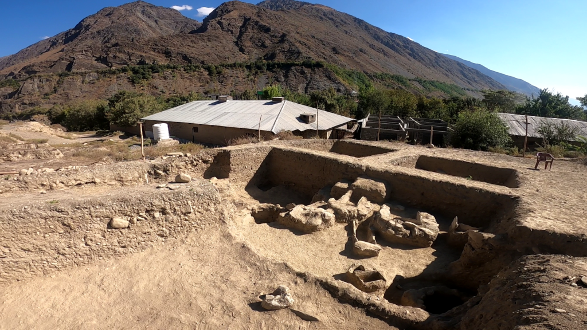
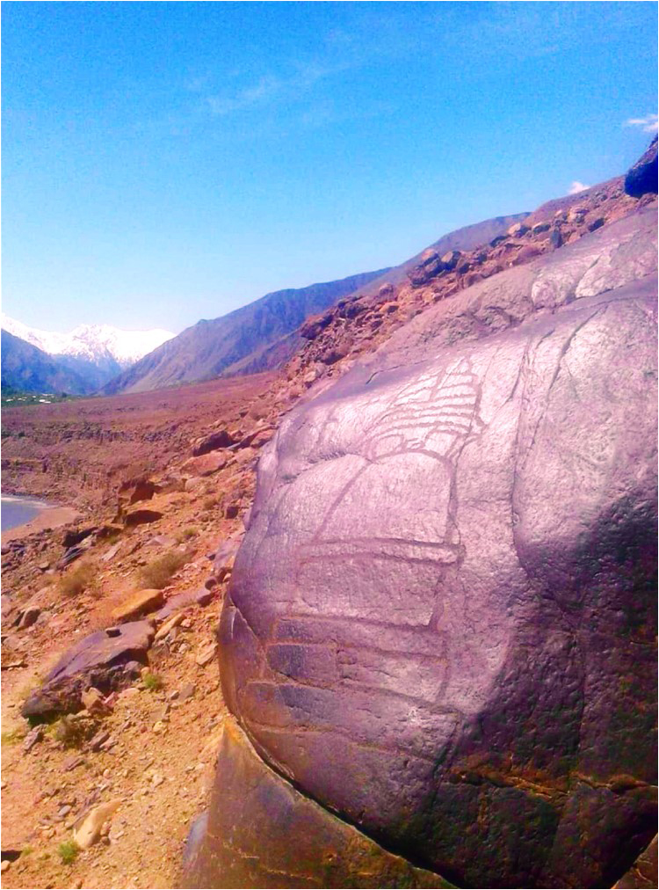
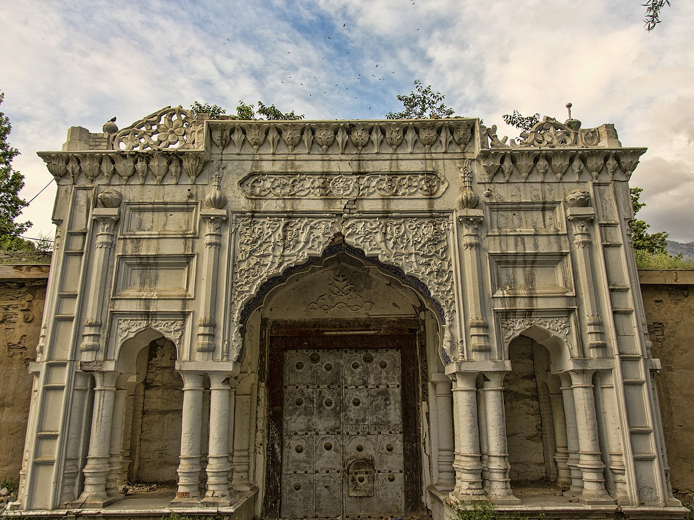
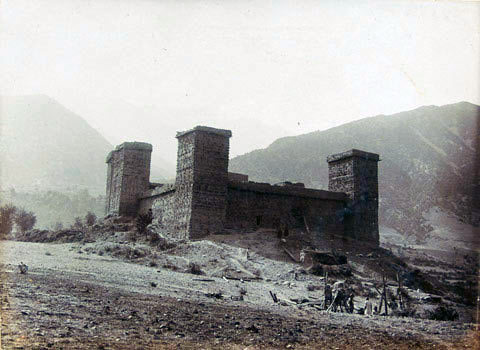
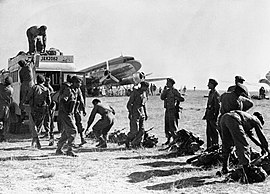

#1
Ancient Era: 
The existence of the Gandharan Grave Culture in Chitral, found in various grave sites scattered over its valleys gives an insightful knowledge of its inhabitants following the Indo-Aryan migrations, after the decline of Indus Valley civilization. The Gankorineotek cemetery in Singoor is home to several ancient burial sites, dating back to the Vedic period.
The area which now forms Chitral was reportedly conquered by the Persian Achaemenids and was a part of one of their easternmost satraps. In the third century CE, Kanishka, the Buddhist ruler of the Kushan empire, occupied Chitral. Under the Kushans, many Buddhist monuments were built around the area, mainly Buddhist stupas and monasteries. The Kushans also patronised Buddhist art; some of the finest examples of the image of Buddha were produced in the region under the Kushan rule.
#2
Buddhist Period: 
Chitral was part of the Buddhist civilization that flourished in the region. Evidence of ancient Buddhist stupas and rock carvings has been found in the area, indicating the presence of these ancient religions.
The spread of Islam reached Chitral in the 11th century. The region became an important center for Islamic culture and trade. It came under the influence of various Muslim dynasties, including the Ghaznavids, Ghurids, and Timurids.
#3
Chitral State:
Chitral became a princely state in the 15th century, and various rulers governed the region. The rulers of Chitral maintained a degree of autonomy while acknowledging the suzerainty of larger empires. The region had periods of stability and conflict, with rivalries between local rulers and external powers.
In the late 19th century, during the British colonial era, Chitral came into contact with the British Empire. The region became strategically important in the context of the Great Game, a geopolitical rivalry between the British and Russian Empires. Chitral briefly became a princely state under British influence.
#4
Katoor era: 
The Katoor dynasty (also spelled Katur and Kator) was a dynasty, which along with its collateral branches ruled the sovereign, later princely state of Chitral and its neighbours in the eastern Hindu Kush region for over 450 years, from around 1570 until 1947. At the height its power under Mehtar Aman ul-Mulk the territory controlled by the dynasty extended from Asmar in the Kunar Valley to Sher Qilla in the Gilgit valley. The Mehtar of Chitral was an influential player in the power politics of the region as he acted as an intermediary between the rulers of Badakhshan, the Yousafzai pashtuns, the Maharaja of Kashmir and later the Amir of Afghanistan.
From 1571 to 1969, Chitral was the dominion of the Kator Dynasty. The British and Sikh garrison suffered a siege by the Chitralis, possibly aided by Afghan forces, in 1895. The garrison was relieved after six weeks, and the British installed the young Shuja ul-Mulk as Mehtar ("ruler"). He ruled for the next 41 years.
#5
Accession To Pakistan: 
In 1947, following the division of the British colony of India, princely states were offered the choice to either remain independent or to choose one of the two new dominions. Initially, Chitral chose to remain independent Monarchy. Later, the Mehtar of Chitral, who was a friend of Quaid E Azam Mohammad Ali Jinnah, acceded to Pakistan and thus Chitral became one of the princely states of Pakistan.
Through 1969 to 1972, it was fully integrated into Pakistan as the administrative district of Chitral.
#6
Role In First Kashmir War: 
Chitral played an instrumental role in the 1947–1948 first Kashmir war. Immediately after acceding to Pakistan, Mehtar Muzaffar ul-Mulk proclaimed Jihad to "liberate" Kashmir from the Dogras. At this point, the Gilgit scouts were retreating and the Dogra forces had made gains in the Burzil pass. Under these circumstances, the Chitral scouts relieved the Gilgit scouts in Domel and Kamri sectors whilst the Chitral Bodyguard force went towards Skardu. The Chitral bodyguards under the leadership of a Chitral Prince laid one of the longest sieges in military history which ended with the fall of Skardu, the surrender of the Dogras, and the capture of Baltistan. During this time, the Chitral scouts assimilated with the Gilgit scouts and went on towards taking the Kargil pass.